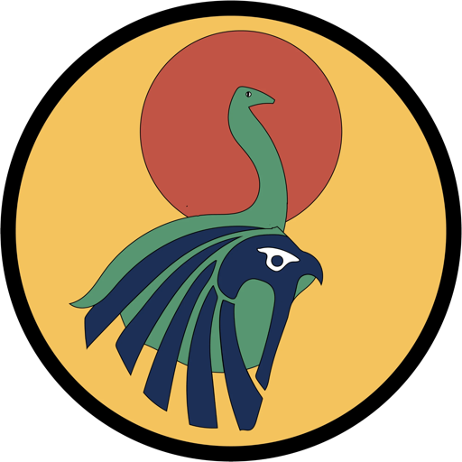
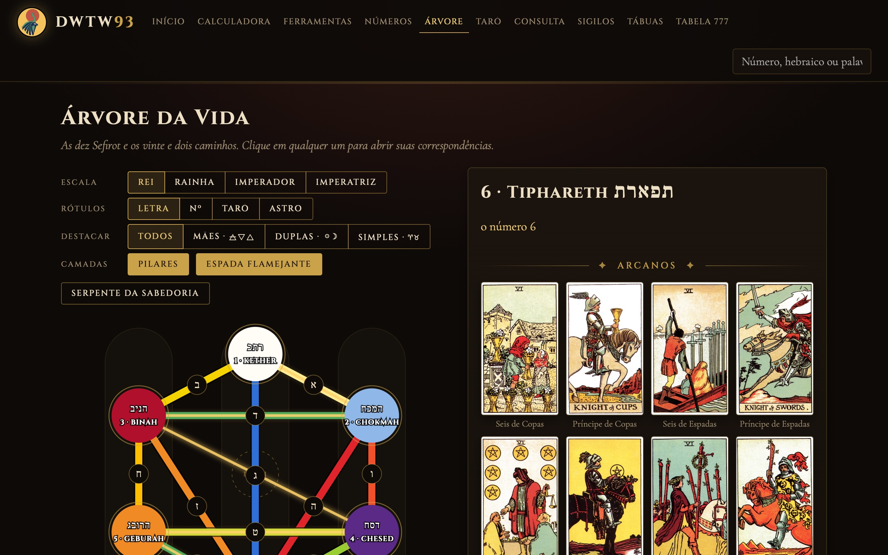
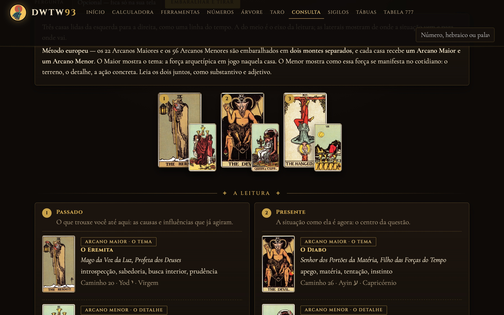
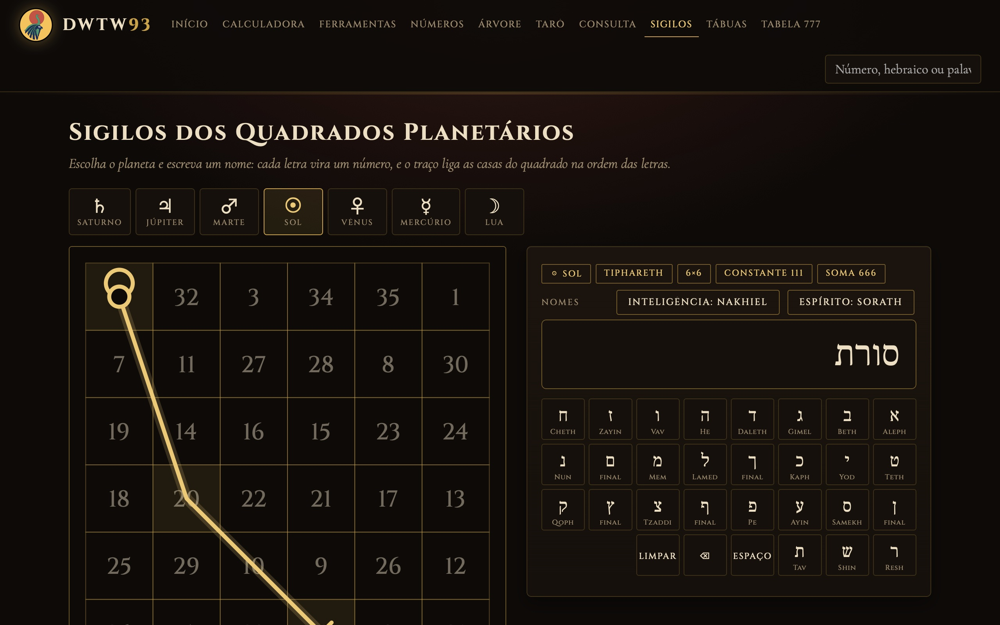
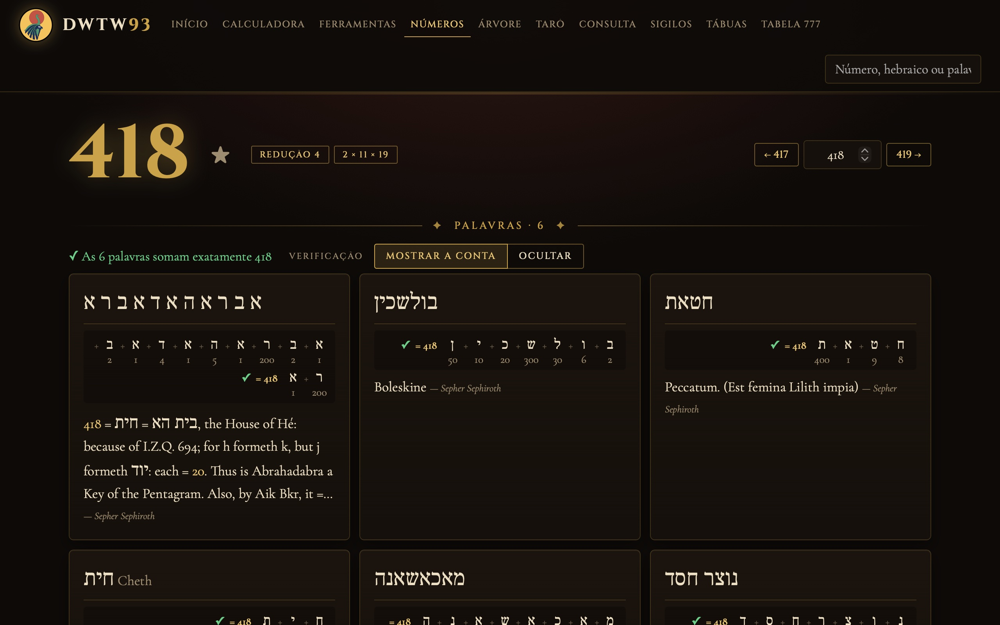

Transformei livros esotéricos de mais de cem anos
em um site interativo — com Python e SQL.
Victor Haruo · Sistemas de Informação · FIAP
O Liber 777 (1909) e o Sepher Sephiroth (1912) são dicionários de símbolos — mas só existem como PDFs com tabelas em duas colunas e o hebraico numa fonte antiga.
Extrair esse texto “do jeito comum” devolve colunas embaralhadas e letras sem sentido.
Cada letra hebraica tem um valor. No dicionário, cada palavra está sob o número que ela soma — então a soma valida a extração.

Dez esferas e vinte e dois caminhos em SVG, nas quatro escalas de cor do 777. Cada caminho abre suas correspondências e as cartas do Tarô ligadas a ele.



Consulta ao Tarô · sigilos de Agrippa · a conta de cada palavra, verificada.
Desenvolvido com o Claude Code como assistente de programação.
Link nos comentários ↓